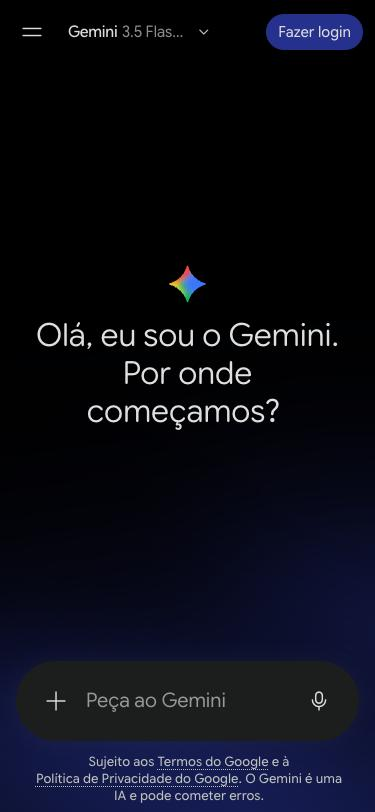
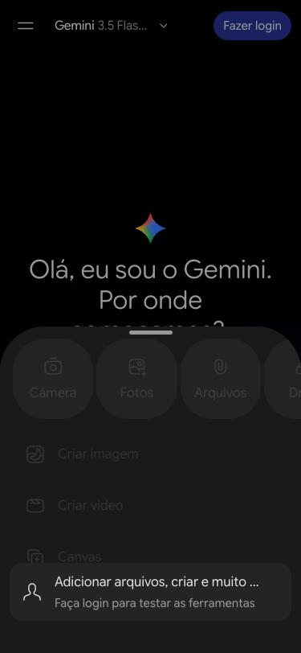

1 Abra o Gemini
Entre em gemini.google.com ou abra o app Gemini. A caixa de texto fica embaixo, com um + do lado esquerdo.
Guia de prompts · passo a passo
O Gemini é a IA do Google. É grátis com uma conta Google e funciona no navegador do celular, no computador ou no app. Os prints abaixo são do navegador do celular; no computador e no app os botões são parecidos. A partir do passo 3 é preciso estar com login, então descrevemos em texto.

Entre em gemini.google.com ou abra o app Gemini. A caixa de texto fica embaixo, com um + do lado esquerdo.

Sem login, o Gemini conversa, mas não deixa anexar fotos: o menu do + aparece apagado com o aviso "Faça login para testar as ferramentas". Toque em Fazer login, no canto de cima, e entre com seu Gmail.
Toque no + e depois em Fotos (galeria do celular) ou Arquivos. Escolha a foto do produto. Ela aparece em miniatura em cima da caixa de texto.
Toque na caixa de texto, segure e escolha Colar. O prompt é longo, em inglês, e é isso mesmo. Toque no botão de enviar, à direita da caixa.
Se o Gemini responder só com texto, sem imagem, escreva em seguida: "Generate the edited image."
Em alguns segundos a nova foto aparece. Compare com a original: o produto tem que estar igual (forma, cores, detalhes). Se a IA mudou alguma coisa, peça de novo ou escreva o que corrigir, por exemplo "Keep the handle exactly as in the original photo."
Para salvar, toque na imagem para abrir em tela cheia e use o botão de baixar.